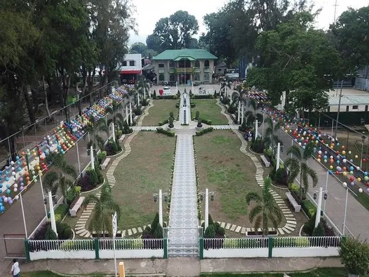

Tubod: The Land of Beauty and Bounty
Situated in the lush scenery of Northern Mindanao, Tubod serves as the capital of Lanao del Norte—an area abundant in culture, stunning landscapes, and potential. While still not a city, Tubod vibrates with the vitality of a forward-looking town ready for advancement, harmonizing tradition with contemporary growth. It is a location where the past and present converge beautifully, allowing both residents and travelers to experience a profound bond with the land and its inhabitants. A key characteristic of Tubod is its vibrant natural surroundings. Locations such as the Kalilangan Cold Spring provide a cool getaway, welcoming families and visitors to unwind in its clear waters enveloped by lush tropical foliage. The adjacent Sta. Cruz Waterfalls enhances the town's natural allure, offering picturesque views and calming sounds that relax the spirit. These locations not only showcase Tubod’s ecological wealth but also signify its potential as a developing eco-tourism attraction in Mindanao. However, Tubod is not only a paradise for nature enthusiasts. It serves as a venue for cultural festivities and a sense of community. The yearly Sagingan Festival, held each October to honor San Isidro Labrador, highlights the town's strong agricultural heritage—especially its plentiful bananas. The festival overflows with vibrancy, music, and community pride as locals wear banana-inspired outfits and participate in street dancing, food markets, and farming displays. This vibrant occasion functions as a homage to Tubod's agricultural traditions and represents the community's happiness, togetherness, and inventiveness. Although Tubod is smaller than the vibrant cities in the Philippines, its significance and influence are substantial. For those looking for a genuine experience in Mindanao, Tubod is more than a stop—it’s a true destination
